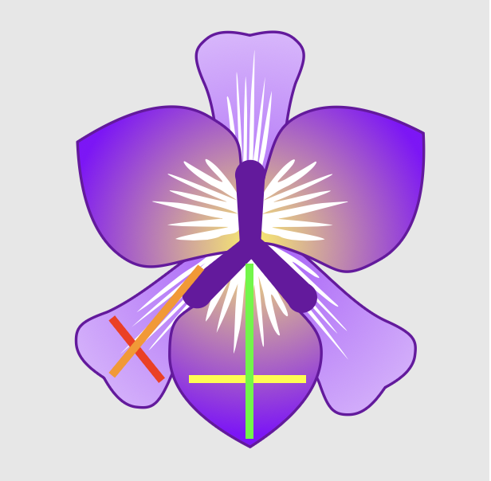

Selected work
Production AI systems, my MSc research, and a run of robotics builds from simulation to hardware.
IntelliChat
A production multi-tenant AI analytics assistant that turns natural language into SQL across 9 business domains for live enterprise clients — with a two-layer semantic cache, tenant isolation, and a nightly self-improvement loop.
AMT Multi-Agent Platform
A workflow-automation platform routing across four department agents over an SAP-aligned ERP dataset, with RAG product search and live email automations — built independently and presented to company leadership.
LLM → Nav2 Task Planner
My MSc dissertation: an LLM planner that turns typed commands into schema-validated Nav2 plans for a warehouse robot, tested on 100 commands across five levels. 95–97% on direct and multi-step commands, 55% on conditionals, traced to the plan format rather than the model.
Sandsifter — Beach-Cleaning Robot
A full ROS 2 (Humble) + Gazebo simulation of an autonomous beach-cleaning robot with a ros2_control manipulator arm and a custom boustrophedon coverage-path planner for complete-area traversal with obstacle avoidance.
CNN Defect Classifier
A MobileNetV2 transfer-learning model for automated PASS/FAIL packaging inspection, reaching ~95% validation accuracy across the full pipeline — data collection, augmentation, training and evaluation.
Industrial Manipulator Kinematics
A 4+ joint industrial manipulator with a prismatic joint, simulated with forward and inverse kinematics for precise end-effector positioning and animated block-stacking in 3D.
Autonomous Intralogistics Drone
BSc capstone: an autonomous warehouse drone that transports payloads using computer-vision ArUco localization and custom 3D-printed grippers — up to 2.4 kg over 6 minutes of flight.
Real-Time Visual Tracking
A computer-vision system that tracks a red ball in real time and drives a dual-servo gimbal with PID feedback — HSV segmentation, pixel-error control, and live parameter visualization.
Epson VT6 Drawing System
Programmed a six-axis Epson VT6 industrial robot for precise path execution with modular RC+ routines, tool calibration and approach offsets — high accuracy and repeatability.
2-Axis Gimbal Stabilizer
A 2-axis gimbal stabilization system using PID control and an MPU-6050 IMU to detect orientation changes and counter them in real time via servo actuation.

ROS 2 TurtleSim Control
A ROS 2 package for controlling TurtleSim robots — node communication, custom message types and control algorithms for autonomous navigation in simulation.

Iris Dataset Classification
Classic ML pipeline comparing SVM, Random Forest and K-Nearest Neighbors on the Iris dataset, reaching 97% accuracy with tuned hyperparameters.